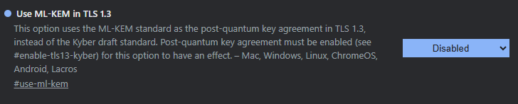
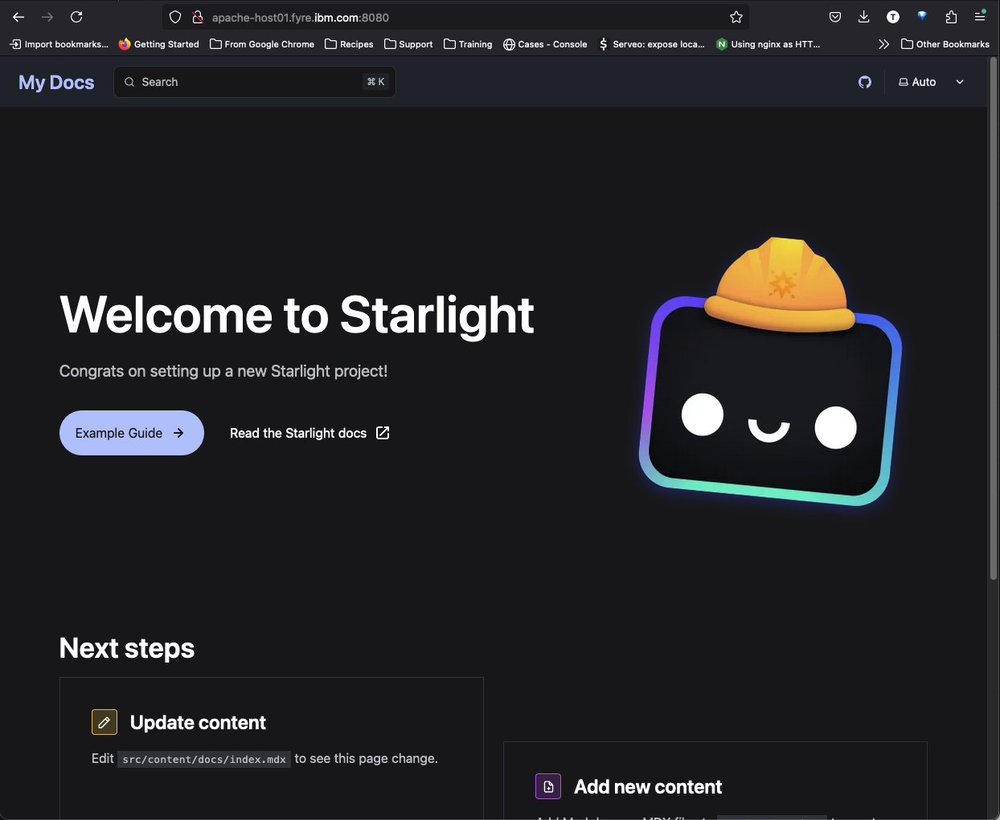
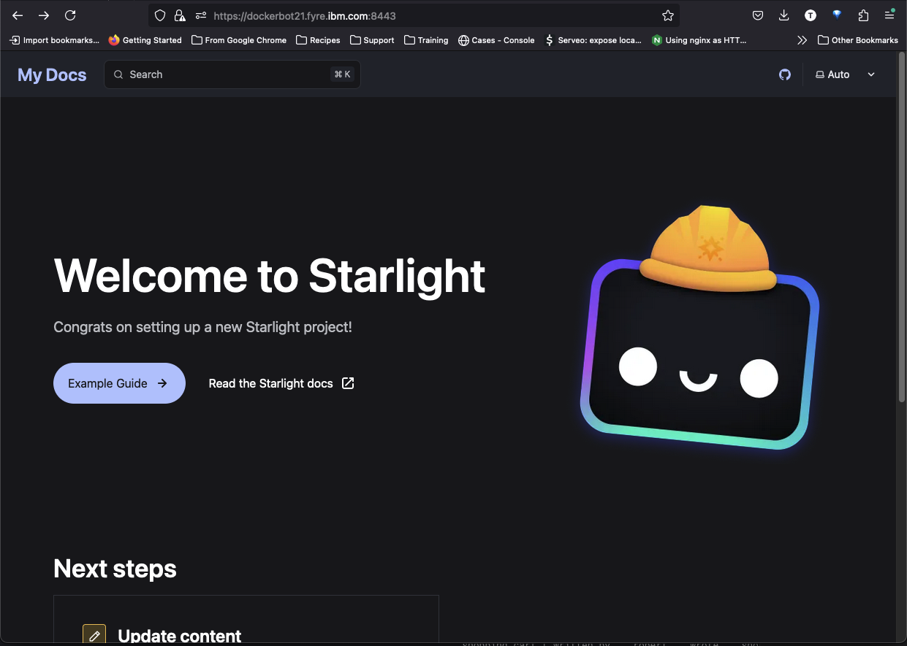
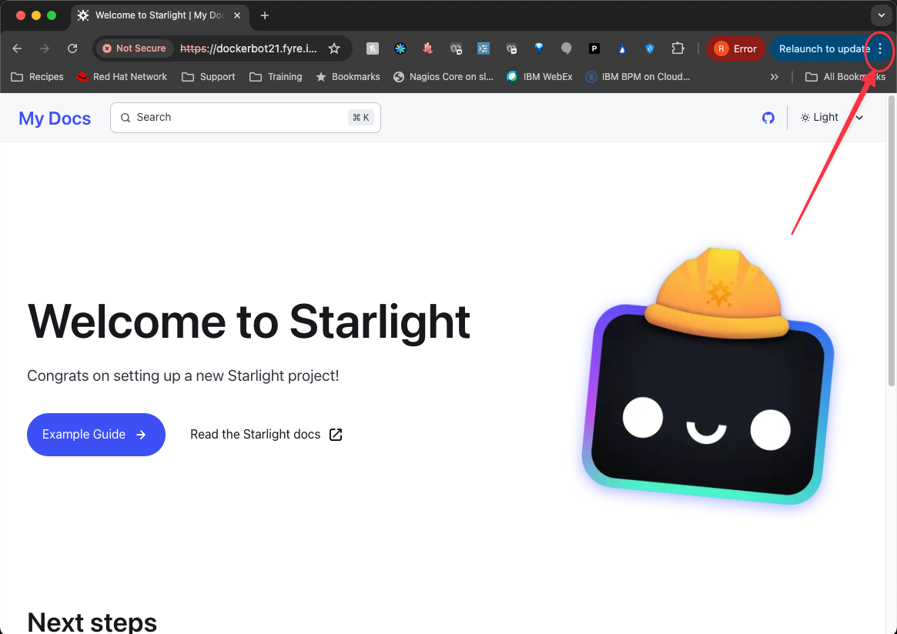
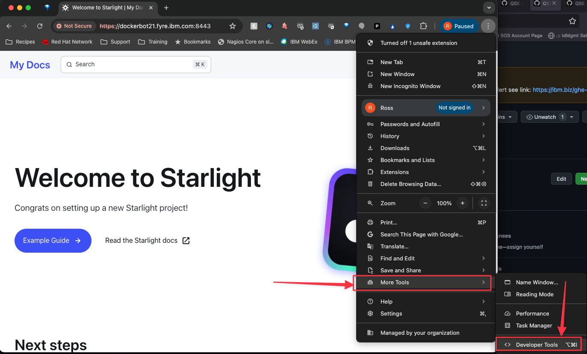
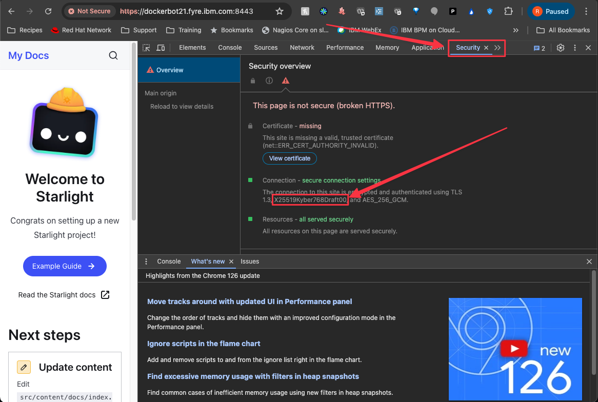

Configuration
Browser configuration
For the exercises below, the browser is the client side of the proxied connection. Each browser type can be configured to support quantum-safe kyber encryption. Chrome and Edge support kyber encryption by default, however Firefox does not.
Depending on the scenario, it could be desirable to either enable or disable kyber encryption for the browser. For example, if the scenario is a legacy encryption client connecting to a quantum-safe kyber encrypted application or site, then the kyber encryption would need to be disabled on the browser. The vice versa would also be true for a scenario where kyber encrypted clients are connecting to a legacy encrypted application or site.
For configuration instructions, see Enable Post Quantum Cryptography Support in Web Browsers
As of Dec 2024, only Chromium-based browsers work in the kyber encrypted front end scenario. Use Chrome (properly configured) for kyber encrypted client connection to the Adaptive Proxy and use Firefox for a legacy encrypted client connection.
Configuring Chrome
For quantum-safe kyber encryption through the Adaptive Proxy, you must disable the use of ML-KEM in TLS 1.3 in Chrome. In a chrome tab, open chrome://flags and look for “Use ML-KEM in TLS 1.3”. Select “Disabled” and relaunch the browser.

The “TLS 1.3 post-quantum key agreement” flag can remain “Default”, as default enables that flag in Chrome.
Adaptive proxy configuration
The adaptive proxy configuration consists of the following files:
adaptive.proxy.location.confadaptive.proxy.upstream.confadaptive.proxy.curvemapadaptive.proxy.passthrough.conf
Example setup
Build a test site
Some of the below was pulled out of How To Create a Self-Signed SSL Certificate for Apache in Ubuntu 16.04
Prerequisites
On our Linux host (Ubuntu 24.0.4 LTS), let’s install httpd and npm, install corepack, enable yarn, and configure the firewall.
sudo apt update
sudo apt-get -y install apache2
curl -fsSL https://deb.nodesource.com/setup_20.x | sudo bash -
sudo apt-get install -y nodejs
sudo corepack enableEnabling mod_ssl
Enable mod_ssl with the a2enmod command:
sudo a2enmod sslRestart Apache to activate the module:
sudo systemctl restart apache2Create the SSL Certificate
Create the SSL key and certificate files with the openssl command:
sudo openssl req -x509 -nodes -days 365 -newkey rsa:2048 -keyout /etc/ssl/private/apache-selfsigned.key -out /etc/ssl/certs/apache-selfsigned.crtThe entirety of the prompts will look something like this:
Country Name (2 letter code) [XX]:US
State or Province Name (full name) []:Example
Locality Name (eg, city) [Default City]:Example
Organization Name (eg, company) [Default Company Ltd]:Example Inc
Organizational Unit Name (eg, section) []:Example Dept
Common Name (eg, your name or your server's hostname) []:your_domain_or_ip
Email Address []:webmaster@example.comBuild the test site
You can build a basic Hello World site or a more complex test site using Astro.
Now let’s build a basic Hello World page for Apache.
Create a directory to act as the document root.
sudo mkdir -p /var/www/html/test-app/buildOpen a new index.html file with your text editor.
sudo vi /var/www/html/test-app/build/index.htmlPaste the following into the blank file:
<h1>Hello world!</h1>Now let’s build an Astro site with a Starlight template.
The following requires access to various public websites. If you are using a proxy that is restrictive, you may run into connection issues.
sudo yarn create astro --install --no-git --typescript relaxed --template starlight /var/www/html/test-appThis will create a directory called /var/www/html/test-app
Go into test-app and update the astro.config.mjs with the following:
import { defineConfig } from 'astro/config';
import starlight from '@astrojs/starlight';
// https://astro.build/config
export default defineConfig({
outDir: './build',
build: {
assets: 'css'
},
integrations: [
starlight({
title: 'My Docs',
social: {
github: 'https://github.com/withastro/starlight',
},
sidebar: [
{
label: 'Guides',
items: [
// Each item here is one entry in the navigation menu.
{ label: 'Example Guide', slug: 'guides/example' },
],
},{
label: 'Reference',
autogenerate: { directory: 'reference' },
},
],
}),
],
});Now run the build
sudo yarn buildThis will build a viable site in /var/www/html/test-app/build
Update apache config
Create a file called /etc/apache2/sites-available/test-site.conf
sudo vi /etc/apache2/sites-available/test-site.confSince we’re running this in IBM Fyre (private cloud), we’re going to use the FQDN of our host here. But please use your own host name here that was used to create the self-signed certificate above.
Listen 8080
<VirtualHost *:8080>
DocumentRoot "/var/www/html/test-app/build"
ServerName apache-host01.fyre.ibm.com
SSLEngine on
SSLCertificateFile /etc/ssl/certs/apache-selfsigned.crt
SSLCertificateKeyFile /etc/ssl/private/apache-selfsigned.key
</VirtualHost>Enable the new config
cd /etc/apache2/sites-enabled
sudo ln -s ../sites-available/test-site.confNow restart apache2
sudo systemctl restart apache2Verify the site is now up by navigating to https://apache-host01.fyre.ibm.com:8080.

If you created the “Hello world” test site then you will see a simple site that says “Hello world!” instead of the “Welcome to Starlight” page shown above.
We set our test site to port 8080.
Deploy the proxy
After following the instructions to install the Adaptive Proxy here
Edit the following file /opt/adaptive-proxy/workdir/adaptive.proxy.location.conf
By default, the best encryption Apache supports is TLSv1.2, so be sure to include proxy_ssl_protocols TLSv1.2 in the config as shown below.
The docker container running Adaptive Proxy will resolve the host name in proxy_pass through the network DNS. It will not use the parent host /etc/hosts file to resolve that host name. So if that name can be pinged without the use of an /etc/hosts update, then it will work. Otherwise, use the IP address instead.
# IBM Confidential
# PID: 5900-B8I
# Copyright (c) IBM Corp. 2024
# Nginx Documentation: https://nginx.org/en/docs/http/ngx_http_core_module.html
# Location directive documentation: https://nginx.org/en/docs/http/ngx_http_core_module.html#location
# file path in server: /etc/nginx/conf.d/location.conf
location ^~ / {
proxy_pass https://apache-host01.fyre.ibm.com:8080/;
proxy_ssl_protocols TLSv1.2;
proxy_set_header Host $host;
proxy_set_header X-Real-IP $remote_addr;
proxy_set_header X-Forwarded-For $proxy_add_x_forwarded_for;
proxy_set_header X-Forwarded-Proto $scheme;
}
Start up the adaptive proxy
cd /opt/adaptive-proxy/workdir
./runAdaptiveProxyServer.shProxy should come up and our test site should be available now

If you created the “Hello world” test site then you will see a simple site that says “Hello world!” instead of the “Welcome to Starlight” page shown above.
In our case, we’re pointing the proxy_pass to the FQDN virtual host we configured on our web server.
The magic is the PORT. You must go to the URL at port 8443 which is where the proxy listens.
In our case, to get to the proxied site:
https://dockerbot21.fyre.ibm.com:8443/
dockerbot21 is our docker host in fyre. His FQDN is dockerbot21.fyre.ibm.com
Our apache host is apache-host01.fyre.ibm.com
Verifying the encryption algorithms
If you created the “Hello world” test site then you will see a simple site that says “Hello world!” instead of the “Welcome to Starlight” page shown above, but the instructions will be the same.
Now that our site is up and proxied, let’s verify that it’s using a Quantum Safe algorithm for encryption.
Currently there is no PQC encryption available for any TLS certs available from any legitimate Certificate Authority.
In a Chrome brower, go to the site and click the three dots.

Open the Developer Tools

Click the Security panel

Here we can see that X25519Kyber768Draft00 is one of the encryption algorithms and that’s Quantum Safe.
Troubleshooting
Adaptive Proxy docker container will not start
Run docker ps to ensure that the AP container is up and running. If it’s not check the local logs directory for error.log. There you will see any error messages from the docker container.
If you see the following message, it means that from within the docker container, the host name of your site cannot be resolved.
[emerg] 1#1: host not found in upstream "quantum-site" in /etc/nginx/conf.d/adaptive.proxy.location.conf:18To resolve, update adaptive.proxy.location.conf and replace the host name in proxy_pass to use the IP address of the site instead. Start AP again.